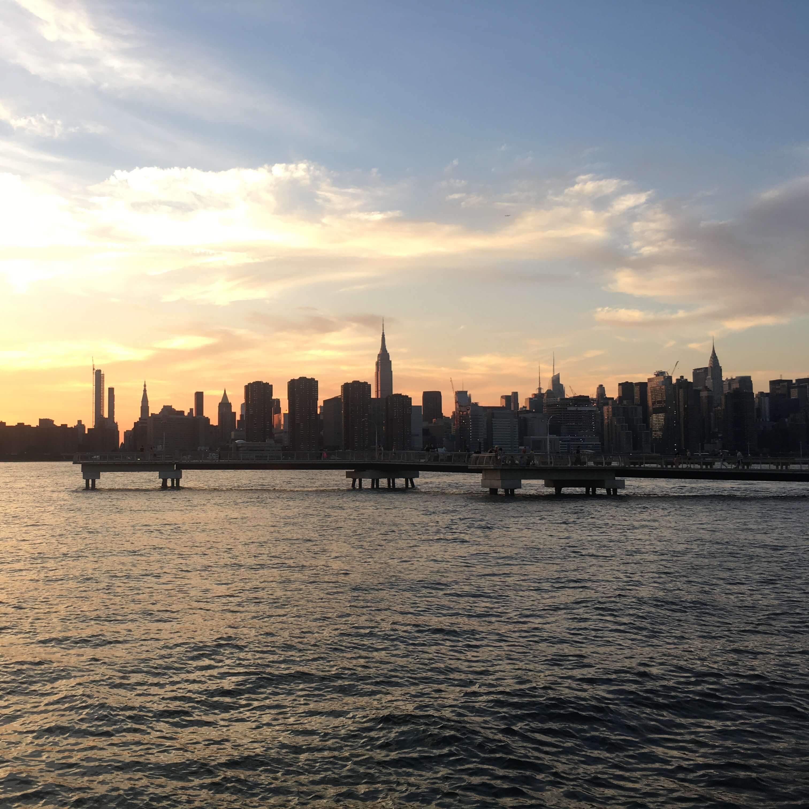
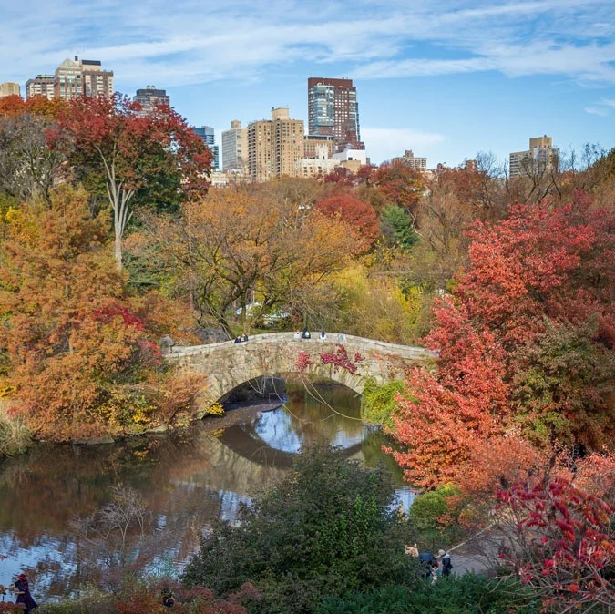

New York
- When? October
- Duration? 5-7 days
- Activity level? Low/moderate

Visit New York in the Autumn (or fall) for the changing of seasons. Stroll through Central Park to see the beautiful fall colours, eat out in the West Village and catch an American Football game.

Don't miss...
- Catching a Giant's or a Knicks game
- Eating in the West Village
- Getting a great view of the city from Brooklyn
- Walking along the Skyline
- Cocktails in a rooftop bar